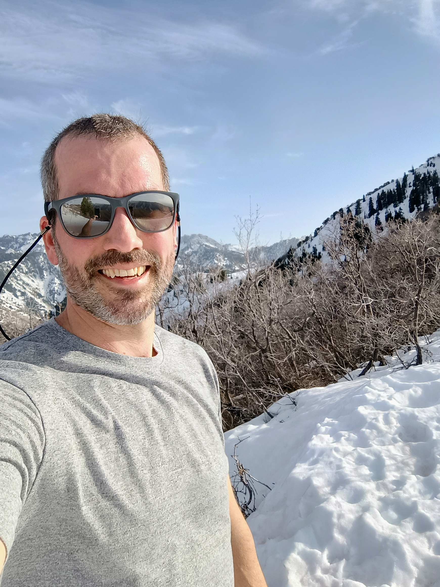

Matt James

...an engineer living and working remotely in Duluth, Minnesota
About Me
I'm a mechanical/manufacturing engineer, small-time farmer, outdoorsman, citizen scientist and musician.
I live in Northern Minnesota with my wife, kids, dog, various farm animals and all the other critters in the woods.
I love to explore new places, experiences and ideas. Probably above all, I'm really fulfilled by creating, be it gadgets, software, or food.
Work
I started my career in the sciences and sold-out with a pivot to manufacturing. I've learned to enjoy the fast-paced nature and opportunities for improvement.
The kind of work I'm good at:
- Urgent
- Creative
- Impactful
- Dynamic
The kind of work I'm not as good at:
- Routine
- Permission/resource constrained
Synchrono
Implementation Consultant
I really enjoy how consistently challenging this job is: there is always more to learn and a unqiue problem to solve.
I always say I WISH I had SyncManufacturing when I was in manufacturing, so it's rewarding to see folks reap its benefits.
As an implementation consultant I drop into a company who wants to bring some sanity to their manufacturing scheduling with SyncManufacturing.
In a matter of months I need to:
- Understand the customer's process
- Configure and customize SyncManufacturing to accurately model the customer's manufactruing processes
- Build and test data connections with outside systems for data like inventory, quality, and sales.
Talents I need to use here:
- Project Management
- Building rapport with new and diverse teams
- SQL: creating stored procedures, views, and queries to create custom functionality and root-cause issues
Clearwater Composites
Manufacturing Engineer
Clearwater is small carbon fiber manufacturer with a mix of high rate and low rate production where I worked as a Manufacturing Engineer.
I wore a lot of hats here. Some notable things I did:
- Designed and fabricated various tools and machines for production including a CNC fabric cutting machine.
- Created CAD models and G-Code for the CNC milling machine I got up and running
- Revised and wrote a lot of standard work instructions
- Created software from the ground up to provide a manufacturing execution system (MES) to replace old Excel files.
I was very proud of it and excited for the scheduling system I imagined this would become
until I learned that Synchrono (my next employer) had beat me to the punch by about twenty years.
Corvus Technical
Literally Everything
I started Corvus Technical to cover my freelancing work. I designed and built the electronics portion of several consumer goods prototypes for an industrial
designer. When I needed to refine my prototypes, I learned how to design and layout PCBs, where to source the bare circuit boards in small batches and how to
do reflow soldering for surface mount chips in my basement lab/office.
Fraser Shipyards
Production Engineer(ing Manager)
Fraser was an exciting place to work. After doing strictly repair work on commercial and government ships on the Great Lakes for something like 70 years, I was around for a lot of development.
The big first project was replacing the steam powerplant of the 690 foot long Herbert C Jackson with a pair of modern diesel engines. It was a massive undertaking.
I was contributing or main author of proposals that won four new build contracts in less than a few years. I brought what I learned about shipbuilding at Marinette to design the production process for all four boats.
Here are the four:
- Mary Ann Market
- Red Cliff Band of Lake Superior Chippewa Fisheries Research Vessel
- Beausoleil First Nation Christian Island Ferry
- Four Bears Casino River Willow dinner cruise boat
Fincantieri Marinette Marine
Deck Test Foreman, Ship Test Manager, Methods (R&D) Engineer
Going from an academic research lab to a shipyard was a hard pivot but I learned a boatload here.
I started as a "Deck Test Foreman", responsible for structural, water-tightness and alignment testing of most things welded to the ship.
This was challenging as I did not have a crew of my own, so I needed to borrow labor from other crews, all of whom were perpetually behind.
A fun thing I did while in this role was creating a spreadsheet to calculate a least squares fit in 2D to accurately set the height of shipping container deck mounts. It was a lot of guess (weld) and check beofre this.
I received a battlefield promotion and briefly served as Ship Test Manager for LCS-7, what would become the USS Little Rock.
I finished my short stay at Marinette in the Methods department, whose mission is researching and developing improvements to aid production.
This was a great department to work in for me because I had quite a bit of latitude to explore new ideas.
In this role I designed and implemented a GPS-enabled RFID inventory tracking system for high-value materials.
The design was outsourced to a vendor who could maintain the system after I left the company.
Large Lakes Observatory
Assistant Scientist
This was my first job out of grad school. I worked in Dr. Jay Austin's Physical Limnology Lab. Physical Limnology = Physical (how it moves, changes temperature, etc.) + Limnology (study of lakes).
What I did here:
- Planned, deployed and managed autonomous underwater glider missions
- Assisted with the design and deployment of seasonal scientific mooring buoys and underwater sensor arrays
- Developed a finite-volume-method numerical model (FVCOM) of the St. Louis River estuary
Jet Express
Captain
I started as a deck hand at the Jet during undergad.
After advancing to senior deckhand my second year, a few captains suggested I get my USCG Master's License.
After compiling my sea service record and taking the exam, I received my USCG "Master of Steam and Motor Vessels of not more than 100 GRT upon all inland waters and the Great Lakes" license, I ran any of the three 149-399
passenger ferries between Sandusky, Kelleys Island, Put-in-Bay, and Port Clinton.
Back to Top
Education
University of North Carolina at Chapel Hill
Master of Science - Marine Sciences
CFD using custom Fortran code and OpenFOAM
University of Toledo
Bachelor of Science - Mechanical Engineering
Co-op assignment at Tenneco Automotive in Milan, OH
Sandusky High School
Back to Top
Farming
Working inside all day means I really crave working outside. Couple that with a pretty persistent urge do things myself and you get
my hobby farm. Aside from a big garden, I've grown and kept these:
Sheep
I've kept mostly Shetland sheep since 2017. I like Shetlands because they're small, thrifty and healthy. Up north, the grazing season is fairly short.
These sheep don't need as much hay as larger breeds but still produce plenty of very mild meat and great wool. As of this writing I've successfully resisted the urge to learn how to spin wool into yarn.
Our Border Collie, Bert, is working on becoming a helpful sheep dog.
Chickens
We've had chickens mostly for eggs since 2013. The hens used to be named after female singers but now it's just the roosters who get a name for some reason.
Turkeys
Every so often I raise a few turkeys for Thanksgiving and the freezer. They aren't my favorite animals to keep.
Ducks
We kept ducks for one year. They were fun to have around, gave great meat and eggs, but they are hands-down the messiest animals we've ever kept.
Never again, unless we start living next to a pond
Wheat
Heirloom Wheat, vintage combine and tractor.
Back to Top
Projects
Sauna House
Fishbook
Boot Dryer
Home Assistant
Back to Top
Recreation
Volleyball
Pickleball
Fishing
Hunting
Foraging
Gardening
Cooking
Trail Running
Sailing
Music
Back to Top
Skills
- CAD
- PCB Fab
- 3D Printing
- Python
- SQL
- Carpentry
- Machine Design
Back to Top